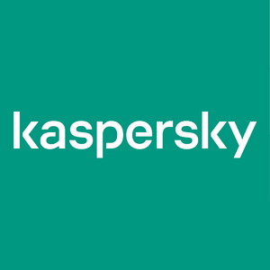

Создание
В 1990 году Евгений Касперский вместе с командой единомышленников приступил к разработке антивирусной программы AVP Toolkit Pro. Четыре года спустя лаборатория Гамбургского университета признала ее самой эффективной среди всех антивирусных решений того времени.
В 1997 году Евгений вместе с коллегами принимает решение создать независимую компанию – «Лабораторию Касперского». С момента основания компании Евгений возглавлял антивирусные исследования,
а в 2007 году был назначен ее генеральным директором.
Сегодня это одна из самых быстроразвивающихся в мире компаний в сфере IT-безопасности с офисами более чем в 200 странах и регионах. В 34 региональных подразделениях, расположенных более чем в 30 странах, работают более 4000 профессионалов и специалистов по IT-безопасности, а решения «Лаборатории Касперского» защищают более 400 миллионов пользователей по всему миру.
О Лаборатории Касперского
В «Лаборатории Касперского» трудятся эксперты мирового уровня, которые принимали участие в расследованиях некоторых самых сложных и изощренных кибератак: Stuxnet, Flame, Red October и других. Компания активно сотрудничает с Интерполом, Европолом и государственными правоохранительными структурами, помогая им в борьбе с киберпреступностью.